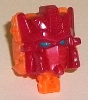

Allegiance : Autobot
Size : Deluxe
Difficulty of Transformation : Easy
Color Scheme : Pastel greenish blue, brownish gray, off-white, and some orangish yellow, red, yellow, silver, and tinted clear plastic
Individual Rating : 8.8
Price : $75 (U.S.)
(NOTE: Because this set is composed of repaints,
this is not a full-blown review. This mainly covers any changes made to
the set and the color scheme, and merely compares it to the original versions
of these molds. For a review on the Walgreens exclusive version of Titans
Return Brainstorm, go
here
. For a review
on the mass-release version of Sentinel Prime, go
here
.
For a review on the original RID2015 Warrior version of Windblade, go
here
.)
 Brainstorm
Brainstorm
Allegiance
: Autobot
Size
: Deluxe
Difficulty of Transformation
: Easy
Color Scheme
: Pastel greenish blue,
brownish gray, off-white, and some orangish yellow, red, yellow, silver,
and tinted clear plastic
Individual Rating
: 8.8
The "Titan Force" Brainstorm
here is similar to the Walgreens exclusive version of Brainstorm-- they
both could pass as "regular" updates to the G1 release-- but there are
some definite differences between the two versions. (I know the Walgreens
exclusive version technically came out later than this version, but I reviewed
the former first, so just humor me here.) Anyways, the most obvious change
compared to Walgreens Brainstorm is that the seafoam green is much paler
and more of a pastel blue, in fact, with a hint of green in it instead.
This goes a bit better with the brownish gray, but doesn't contrast as
well with the off-white, and since the off-white is more prevalent, I consider
this a slight negative change, here. (The off-white and brownish gray plastic
are both approximately the same here as on the Walgreens version, by the
by-- the brownish gray may be ONE shade more gray, but it's hard to tell.)
The transparent plastic has been changed from a yellowish tint to a more
straightforward tinted clear plastic on this version. The other changes
have to do with (mostly) minor paint app differences. The biggest paint
app difference is that the front of this version's lower legs are painted
that same pastel green-blue, with some simple silver-and-red details on
the front. On this version the ab piece is left unpainted, but instead
there's a tiny Autobot symbol ABOVE the cockpit-chest. The paint apps on
the bottoms of the wings are missing, but the rear thrusters are now painted
brownish gray, as are the fists (though inside the fist hole you can see
the pastel green-blue plastic). The face paint apps are slightly different,
with the faceplate being still orangish-yellow, but more on the yellow
side of things than orange, while the eyes themselves are yellow. (I prefer
the Walgreens' blue eyes a bit better, they pop more.) The front little
side vents that flip over the fists for vehicle mode are now painted silver
(they were unpainted on the Walgreens version), and the rear windows in
vehicle mode are painted that pastel green-blue-- another important detail
missing on the Walgreens version. The nosecone of the vehicle mode also
isn't all one color on this version-- rather, the guns are brownish gray,
while the side vents are off-white. Finally, Teslor's face is orange with
a yellow visor, whereas with the Walgreens version that whole area was
just orange.
No mold changes have
been made to this version of Brainstorm when compared with the Walgreens
version.
 Sentinel
Prime
Sentinel
Prime

Allegiance
: Autobot/Senate
Size
: Voyager
Difficulty of Transformation to Shuttle
:
Easy
Difficulty of Transformation to Train
:
Medium
Color Scheme
: Moderately light red,
transparent fiery orange, and some dark fiery red, yellow, transparent
yellow, and moderately light blue
Individual Rating
: 7.9
The Titan Force version
of Sentinel Prime has the same GENERAL color scheme as his mass release--
that is, he's mostly a fiery orange-- but this time around, much of him
is translucent. The orange plastic-- on his main body, arms, feet, and
all but the main body and face of Infinitus-- is a really striking, fiery
shade, and my favorite part of this redeco. Another big positive change
is that the blah light milky gray on the mass release has been changed
to a dark, fiery shade of red plastic, which both complements and contrasts
well against the fiery translucent orange. His last main color is a fairly
light, flat shade of red, which is used for his guns, lower legs, his wings,
and much of his back. Although still decent-- it certainly does the same
contrast/complement bit with Sentinel's other colors-- it's my least favorite
of his colors, as it's a bit bland of a shade of red, and perhaps just
a bit lighter than I would have liked for a flat shade of the plastic.
There's also quite a lot of this same shade of red used for details on
the translucent orange plastic-- like on the guns on the lower arms; lines
on the shoulders, chest, and waist; fists; and on the space shuttle nosecone.
just like on the mass release, yellow is also used as an accent color on
Sentinel, and often in the same places-- little circles on the shoulders,
details on the knees, and on molded-in details for the wheels for the train
mode. (All of the train mode wheels are painted this time around, though,
as opposed to just some on the mass release.) The cockpit window detail
on the shuttle mode is also yellow-- one of the paint apps I'm not fond
of, as it doesn't look right for a window. In lieu of Autobot symbols,
this version of Sentinel Prime has Senate symbols on his shoulders and
wings, showing his past as part of the corrupt former government of Cybertron
in the IDW comics-- something that isn't on the mass release toy as I don't
think most kids would understand what the heck these symbols meant. The
transparent yellow used for the cockpit for the alt modes is the same on
this version as on the mass release. Finally, in regards to Infinitus,
beyond the translucent orange plastic mentioned earlier, his Titan Master
face has a bit of light red paint on it, while the Titan Master body and
pretty much the entirety of Sentinel Prime's face are that nice dark fiery
red. Sentinel's eyes are a nice moderately light blue, which contrast VERY
well against that red. In fact, despite the fact that the whole point of
the toy is a fiery, "energized" version of Sentinel, I would've liked to
see at least a few more blue paint apps here and there-- the contrast is
just stunning.
No mold changes have
been made to this version of Sentinel Prime.
 Windblade
Windblade
Allegiance
: Autobot
Size
: Deluxe/Warrior
Difficulty of Transformation
: Easy
Color Scheme
: Dark navy blue, flat
gray, and some dark cherry red, silver, very light glossy bluish gray,
white, and light aquamarine
Individual Rating
: 7.6
Windblade is the odd
'bot out, here, as she's not a Titans Return figure. Rather, she's a redeco
of the RID2015 warrior, and as such is a tad out of place stylistically;
her mold detailing and overall look is more simplistic and stylized than
that of Sentinel or Brainstorm. (She also has no nose in robot mode, due
again to the series' styling.) Still, she fits in with the overall set
in that her color scheme is themed to match
Fortress
Maximus'
-- that is, she's mostly a medium gray and a dark navy blue.
It's not exactly the most exciting color scheme given all that dull plastic,
but she does have a few other colors to help spice things up some. She
has a bit of her trademark red, but it's appropriately darkened a bit,
and is used as paint on the hilt of her sword, on the outline windows on
her cockpit, her kneecaps, and on some angular stylized detailing on her
chest, face, and head. Silver is also used on the figure, on the blade
of the sword, her chest, the front of the nosecone, and on her fan blades.
She's also got two slight variations on white-- she's got a normal white
paint on her face, while a very light glossy bluish gray is used on the
feet and her abs. It's a nice shade, as it combines both of Windblade's
main colors while also being light enough to contrast against both colors
pretty nicely-- I wish it was used a bit more. The last color yet to be
mentioned is a light aquamarine paint, used to frame her face. It's a really
eye-catching color, and another paint color I wish had been used more,
particularly in vehicle mode (like the windows, maybe?). Beyond just the
dark navy blue plastic, there's also some really nice stylized details
in paint on her chest and shoulders. Really, the main body and head look
marvelous with all the paint apps there-- unfortunately, beyond that her
color scheme is fairly dull overall, just like Fort Max's.
No mold changes have
been made to this version of Windblade.
The Titan Force 3-pack is a pretty decent deal for an SDCC exclusive, only being slightly more expensive than buying all 3 toys individually. Unfortunately, unless you're unable to score a Walgreens version of Brainstorm for a decent price, its appeal seems rather limited, even for an SDCC exclusive. I do like the "energized" Sentinel Prime color scheme with all that transparent orange, but it's still just a variant on his main scheme-- I would've preferred something a bit more different. Windblade, due the line she comes from, can't interact with Fort Max in any meaningful way, but yet has his generally dull color scheme and is inferior in that respect to her RID2015 color scheme.
Reviews by Beastbot